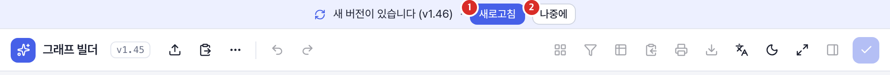
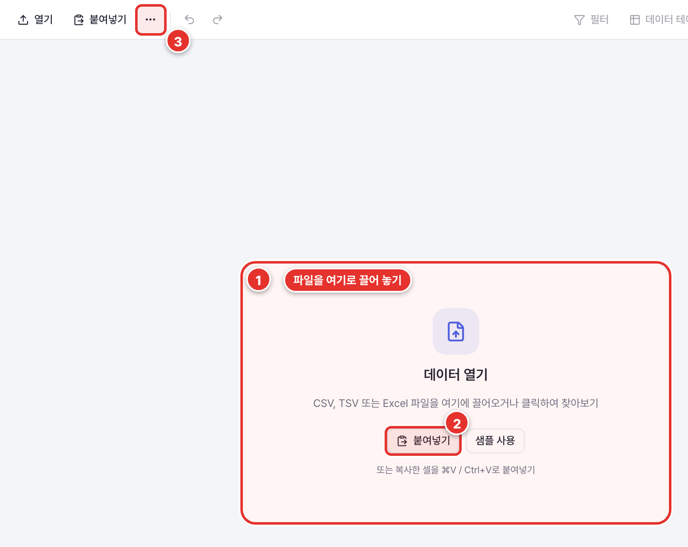
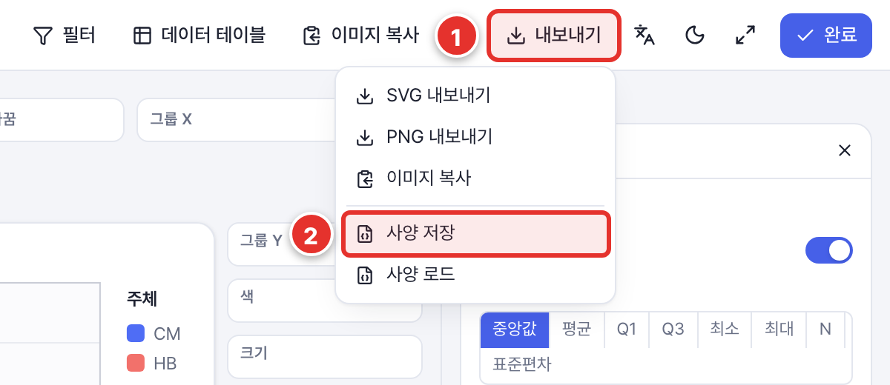
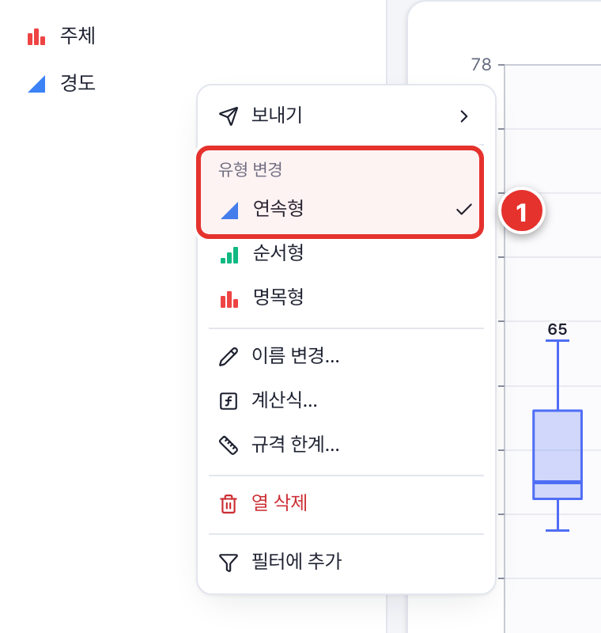

전체 행, 선택한 행, 그래프에 쓰는 행 가운데 고를 수 있어요. 제외한 행 빼기는 기본으로 켜져 있어 제외한 행은 빠집니다.
열
전체 또는 골라서 복사할 수 있어요.
머리글 · 숫자 표기
머리글 포함을 정하고, 숫자 표기는 원본 그대로 / 소수점 자리 고정 중에서 고를 수 있어요.
바로 복사데이터 테이블에서 행을 선택한 채로 Ctrl+C(Mac은 ⌘+C)를 누르면 창을 띄우지 않고 선택한 행이 표 데이터로 바로 복사돼요.
2.5새 버전은 새로고침만
그래프 빌더가 새로 나오면 화면 맨 위에 알림 띠가 나타나요.
1새로고침을 클릭하면 바로 최신 버전으로 바뀝니다. 다시 내려받거나 설치할 필요가 없어요.
지금은 바쁘다면 2나중에를 클릭해 띠를 닫아 두세요. (브라우저를 닫을 때까지 다시 나오지 않아요.)

새 버전 알림 띠 — 1 새로고침 2 나중에
새로고침해도 하던 표와 그래프는 그대로 남아 있어요(6장 참고). 화면 왼쪽 위의 v숫자가 지금 쓰고 있는 버전이에요.
2.6데이터는 내 브라우저에만 저장돼요
붙여넣거나 연 데이터는 서버로 전송되지 않고, 내 컴퓨터의 브라우저 안에서만 처리되고 저장돼요. 그래서 사내 데이터도 안심하고 쓸 수 있습니다.
대신 다른 PC나 다른 브라우저에서는 보이지 않으니 중요한 데이터는 원본 엑셀 파일을 보관하세요. 자세한 내용은 6장 내 데이터는 어디에 저장되나요를 보세요.
안 열리면사내망에서 이 주소가 막혀 있으면(페이지가 안 뜨거나 “차단됨”이라고 나오면) 담당자에게 알려 주세요. 인터넷 없이 직접 실행하는 방법은 부록 A에 있어요.
3첫 그래프 만들기 (3분)
예제는 LOT별 경도를 상자 그림으로 그리는 거예요. 열 이름은 LOT, 주체, 경도 세 개입니다. (Mac에서는 Ctrl 대신 ⌘을 누르세요.)
3.1데이터 열기

처음 화면 — 1 파일을 끌어 놓기 2 붙여넣기 3 더보기(샘플)
처음 화면에는 데이터 열기 카드가 보여요.
CSV나 엑셀 파일은 카드 위로 끌어다 놓으면 열립니다. 엑셀 파일의 날짜·시간 칸은 셀 서식대로 2026-11-05, 2026-11-05 14:30:00 같은 글자로 열리고, 일반 숫자는 숫자 그대로입니다.
시트가 여러 개인 엑셀 파일(내용이 있는 시트가 2개 이상)을 열면 시트 선택 창이 먼저 뜹니다. 시트마다 이름과 크기(N행 × M열)가 보이고, 첫 시트가 체크되어 있습니다. 불러올 시트를 체크하고 확인을 누르면 시트마다 테이블 탭이 하나씩 만들어지며 이름은 "파일 이름 – 시트 이름"입니다. 빈 시트는 목록에 나오지 않고, 내용이 있는 시트가 하나뿐이면 창 없이 바로 열립니다.
나머지 범주의 행은 그래프 계산에서도 빠져서 Y축 범위·범례·색이 보이는 범주만으로 정해지고, 그래프 아래에 “상위 10개 표시 (전체 N개)”라고 알려 줘요.
중첩 축은 아래 줄 묶음을 기준으로 세고, 그 안의 범주는 모두 남아요.
관리한계는규격 한계(빨간 점선)와 달리 데이터에서 계산한 선이라 자료가 바뀌면 같이 움직이고, 눈금 범위를 넓히지는 않아요(범위 밖이면 창에서 알려 줍니다).
막대를 큰 순·작은 순으로 한 번에 정렬하기
이럴 때 이름(LOT 등)별 출하 수량 합계 막대를 큰 것부터(또는 작은 것부터) 늘어놓고 싶을 때
막대 요소의 통계를 합계로 바꿔요(막대의 기본은 평균이에요).
범주 축 이름 옆, 설정 단추 오른쪽의 정렬 단추를 클릭해요. 누를 때마다 큰 순 → 작은 순 → 원래 순서로 돌아가요.
되돌리고 싶으면 Ctrl+Z(실행 취소)예요. 클릭 한 번이 한 단계예요.
옵션
하는 일
정렬 단추
마우스를 그래프 위에 올리면 나타나고, 정렬된 동안에는 파란색으로 계속 보여요. 단추에 마우스를 올리면 지금 상태와 다음 클릭의 결과(“정렬: 큰 순 (누르면 작은 순)”)가 나와요. 세로 막대의 가로축뿐 아니라 가로 막대의 세로 범주 축에도 있어요.
범주 축 우클릭 ▸ 정렬: 원래 순서 / 큰 순 / 작은 순
단추와 같은 세 가지를 메뉴에서 바로 골라요(지금 상태에 체크 표시).
축 설정 ▸ 순서 통계량 = 요소와 같게 (합계)
괄호 안이 지금 그래프의 요소가 그리는 통계예요. 요소의 통계를 평균으로 바꾸면 축을 건드리지 않아도 막대 순서가 평균 기준으로 따라가요. 합계·평균 등을 골라 두면 요소와 상관없이 그 통계로 고정돼요.
참고·주의
Y에 연속형 열이 없는 그래프(개수만 세는 막대 등)에서는 행 수 기준으로 정렬해요.
직접 끌어 정한 수동 순서가 있는 열은 그대로 두고, 나머지 열만 정렬돼요. 원래 순서도 수동 순서를 따라요.
정렬 기준이 이미 다른 것(행 순서, 다른 열, 고정한 통계)이면 첫 클릭이 큰 순(요소와 같게)으로 바꿔요.
표시 개수(상위 N개)와 드릴다운은 이 순서를 그대로 써요. 드릴한 채로 눌러도 드릴 위치는 그대로예요.
완료 화면과 내보낸 그림에는 단추가 나타나지 않아요.
그래프 전체의 글자 크기
글자가 작아 읽기 어렵거나 너무 크다면 그래프 설정의 축 눈금 글꼴·축 제목 글꼴(8~28px, 비우면 기본 11·12)로 모든 축의 글자 크기를 한 번에 바꿀 수 있어요.
축 하나만 다르게 하고 싶으면 축 설정 창의 눈금 글꼴 크기·제목 글꼴 크기에 적으세요(비우면 그래프 설정을 따라요).
그 뒤에 그래프 설정에서 다시 바꾸면 축마다 따로 적은 크기도 모두 새 값으로 맞춰져요.
범례 글자 크기는 바뀌지 않아요.
그래프 위에서 직접 확대·축소·이동
조작
결과
플롯 위에서 휠 (Ctrl(Mac은 ⌘)+휠도 같아요)
커서 자리를 기준으로 X·Y 축이 함께 확대·축소돼요.
Shift+휠
X축만 바뀌어요.
Alt+휠
Y축만 바뀌어요.
범주 축(예: LOT)에서 플롯 위 휠
보이는 범주 구간을 좁히고 넓혀요(커서 아래 범주가 고정돼요).
빈 플롯 더블클릭
그 패널의 X·Y 축이 자동 범위로 돌아가요.
확대한 뒤 빈 플롯 끌기
그래프를 옮길 수 있고, 떼면 실행 취소 한 번으로 되돌릴 수 있어요. Space 또는 마우스 가운데 단추 드래그는 확대 전에도 이동해요.
그래프 아래에 보이는 조작 힌트 줄은 그래프 설정의 조작 힌트 표시로 끌 수 있어요.
4.1.3구성비 + 꺾은선을 한 그림에
이럴 때 A%·B%(합 100)를 100% 누적 막대로, 같은 대상의 경도를 꺾은선으로 한 그림에 놓고 싶을 때
순서
세 열(A%, B%, 경도)을 Y에 병합합니다.
경도 열의 축 제목을 우클릭해 오른쪽 축으로 이동을 고릅니다. (열을 패널 오른쪽 가장자리의 오른쪽 축에 병합 영역에 끌어 놓아도 됩니다.)
요소 줄에서 막대를 켜고 배치를 100% 누적으로 바꾼 뒤, 적용 변수에서 A%·B%만 켭니다.
선 요소를 켜고 적용 변수에서 경도만 켭니다.
범례 항목
범례 항목은 끌어서 순서를 바꿀 수 있고, 항목을 클릭하면 색을 고를 수 있어요.
변수 색은 그래프에, 레벨 색은 그 열을 쓰는 모든 그래프에 적용돼요.
참고: 색·중첩·모양 열의 범례에는 그래프가 실제로 그리는 레벨만 나와요. 로컬 데이터 필터(“표시” 모드)·제외·드릴로 행이 모두 빠진 레벨은 범례에서도 사라지고, 나머지 레벨의 색은 그대로예요. “선택” 모드는 행을 숨기지 않으니 범례도 그대로예요. 숨은 레벨은 순서에서 제자리를 지켜요.
요소의 앞뒤 순서
요소 줄의 순서는 그림의 앞뒤 순서입니다. 위에 있는 요소가 앞(다른 요소를 덮음)이에요.
요소 이름 왼쪽의 ⋮⋮를 끌거나, 그 손잡이에서 ↑↓ 키를 눌러 순서를 바꿀 수 있습니다(되돌리기 가능).
새로 켠 막대·히스토그램·영역·상자·히트맵·트리맵은 선·점 뒤에, 선·점 같은 얇은 요소는 맨 앞에 놓입니다.
X가 범주형(LOT 같은 그룹), Y가 연속형일 때 쓰며, 그룹별 평균·SD·95% 신뢰구간과 사후 비교를 보여 줍니다. 분산이 다르면 자동으로 Welch 방법으로 바뀝니다.
그룹이 정확히 2개면 t검정이 되고, 같은 대상을 두 번 쟀다면 대응 ID 열로 대응 t와 Wilcoxon 부호순위를 함께 봅니다.
단측 검정은 자료를 보기 전에 방향을 정할 때만 씁니다.
Kruskal–Wallis·Wilcoxon 순위합 행이 항상 함께 나옵니다.
관리한계·관리도
축 설정 ▸ 관리한계에서 평균 ±3σ의 CL·UCL·LCL을 점선-점으로 나타냅니다(규격 한계와 다름). 로그 축에서는 계산 척도가 로그 값으로 계산해 하한이 0 아래로 사라지지 않습니다.
요소 줄의 관리도로 I-MR·X̄-R·X̄-S·CUSUM·EWMA·p·np·c·u를 고릅니다(CUSUM·EWMA는 작은 평균 이동을, p·np·c·u는 불량·결함 개수를 감시합니다). 규칙을 어긴 점은 빨강으로 강조하고, 기준 구간을 지정할 수 있으며, 관리도 판정 문장이 자동으로 나타납니다.
앱은 한계를 임의로 계산하거나 점을 지우지 않으므로, “관리 상태로 보임”은 안정함의 증명이 아님을 알아 두세요.
항목 열 다섯 개를 X에 한꺼번에 놓습니다. X 축을 우클릭 ▸ 변수마다 칸 나누기를 고르면 항목마다 자기 축을 가진 칸이 나란히 생깁니다(한 칸으로 합치기가 반대, Ctrl+Z실행 취소 한 번에 돌아가요).
유형을 Y와 색에 놓습니다.
요소 줄에서 점을 끄고 구간 막대 (최솟값~최댓값) 단추를 켭니다.
SPEC 줄은 기본으로 맨 앞(SPEC, ACT)에 놓입니다. 유형이 더 있을 때 순서는 범주 이름을 끌어 바꾸고, SPEC 위치를 둘째로 두면 Carrier, SPEC, ACT처럼 첫 유형 다음에 놓입니다. 세로로 보려면 X와 Y를 바꿉니다(범주 X, 항목 Y 칸들).
옵션
옵션
내용
끝 모양
화살표(기본)·둥글게·네모. 값이 하나뿐인 그룹은 짧은 표식으로 그려집니다.
끝 값 표시
막대의 최솟값·최댓값을 양 끝에 적습니다. 막대 안에 둘 다 들어가면 안쪽에, 아니면 바깥에 적고 칸 밖으로 나가지 않아요. 숫자는 축 형식을 따릅니다.
막대 두께(너비 비율)
범주 칸 대비 막대 두께(기본 0.6, 글자 크기의 1.9배가 상한)와 채우기 불투명도.
SPEC 줄
항목 열의 규격 한계(LSL~USL)를 초록 막대 한 줄로 그립니다. 이름(기본 SPEC)과 위치(첫째·둘째·마지막, 기본 첫째)를 고르고, 한계가 없는 항목의 칸은 비어 있습니다. 한쪽 한계만 있으면 그 한계에서 칸 끝까지 옅어지는 막대로 그려요. 정렬·필터·Top N·드릴에는 영향이 없습니다.
규격 한계선
LSL·USL 위치에 초록 점선을 칸 전체에 긋습니다. 켜면 열의 기본 빨간 LSL·USL 선은 그리지 않아요(목표값 선은 그대로).
규격 판정 · 판정할 범주
한계를 넘은 부분을 빨간 빗금으로 덮고, 막대를 빨간 테두리로 두르고 “⚠ 상한 초과 +0.055”·“⚠ 하한 미달 −0.012”를 씁니다. 판정할 범주의 체크를 끄면 그 범주는 판정하지 않습니다(예: 기준값 Carrier).
규격 혼재
스택한 데이터(값 열 + 라벨 열)에서 라벨을 칸·범주로 나누지 않으면 한 막대에 규격이 다른 행(외경·두께…)이 섞입니다. 이 막대는 그리되 판정하지 않고 “규격 혼재”라고만 적으며(툴팁도 “규격 혼재 — 판정하지 않음”) 알림을 띄웁니다. Y를 라벨 열로 두거나 칸을 나누면 항목마다 자기 규격으로 판정됩니다. 이때도 패널에 규격이 둘 이상이면 SPEC 막대·초록 점선은 그리지 않고(그릴 패널이 하나도 없으면 SPEC 행도 없음) “항목마다 규격이 달라 SPEC 행과 규격선을 생략했습니다” 알림을 띄웁니다. 범례의 “SPEC”·“규격 벗어남” 항목은 실제로 그려질 때만 나옵니다.
참고·주의
범례에 색 항목 아래 SPEC (규격 한계)와, 규격을 벗어난 막대가 있으면 빗금 견본 규격 벗어남이 나옵니다. 막대에 마우스를 올리면 구간·폭·n·규격·판정이 툴팁으로 나와요.
구간 막대는 범주 축 하나와 연속형 축 하나가 필요합니다. 두 축 모두 연속형이면 그리지 않고 안내만 나옵니다.
SPEC 줄은 범주 열이 하나인 축에만 생깁니다(여러 열을 중첩한 축은 제외).
대시보드·완료 화면·이미지 복사·PNG/SVG 내보내기·인쇄에서 빗금까지 같게 나옵니다.
4.3강조·구성 보기
4.3.1LOT 하나만 따라가며 보기 — 클릭 강조
이럴 때 LOT 하나(범주 하나)의 행만 그래프·데이터 테이블·대시보드에서 따라가며 보고 싶을 때
순서
상자·막대·점, 값 라벨, 또는 X 범주 축 이름을 클릭합니다.
그 범주(예: LOT 하나)의 행이 모든 Y 패널·데이터 테이블·대시보드에서 강조되고, 나머지는 흐려져요.
옵션
조작
결과
Ctrl(Mac은 ⌘)+클릭
범주를 더하거나 빼요.
Shift+클릭
마지막으로 누른 범주부터 이 범주까지 연속으로 골라요.
빈 곳 클릭 또는 Esc
강조가 해제돼요.
강조된 범주를 수정키 없이 다시 클릭
선택이 풀려 원래대로 돌아가요.
참고완료 화면에서도 같게 동작하고, SVG·PNG로 내보내면 강조된 상태 그대로 나와요.
4.3.2LOT별 구성 한눈에 보기 — 트리맵·히트맵 비중
이럴 때 큰 사각형 = LOT, 그 안의 칸 = T(두께 구간), 칸 넓이 = 수량 합계로 구성 비중을 보고 싶을 때
순서 — 트리맵
LOT를 X에, 수량을 Y에, T를 색에 놓습니다.
요소 줄의 트리맵을 켭니다.
합계가 큰 LOT·구간이 먼저 눈에 띄고, 칸에 마우스를 올리면 합계와 비중이 나옵니다.
정렬은 정렬에서 축 순서로 바꿀 수 있어요.
합계가 0이거나 음수인 칸은 넓이를 줄 수 없어 빠지고, 그래프 아래에 개수를 알려 줘요.
옵션 — 격자에서 비중 보기 (히트맵)
옵션
하는 일
히트맵의 칸 값
개수·합계·평균 중에서 고릅니다.
정규화
행·열·전체 % 중에서 고릅니다.
색 기준 = 행마다 최대
비중이 고른 행은 모두 짙게 보이니, 이렇게 바꾸면 행 안의 순위가 보입니다.
행끼리는색을 비교할 수 없으니 값 표시로 읽으세요.
4.3.3LOT의 측정값을 하나도 빼지 않고 이어 보기 — 선의 요약 안 함
이럴 때 LOT 하나에 측정이 여러 번 있어도 선은 보통 LOT마다 평균 한 점만 그려요. 측정마다 점을 하나씩 보고 싶을 때
순서
LOT를 X에, 측정값을 Y에 놓습니다.
선을 켭니다.
요소 패널의 요약 안 함(행마다)을 켭니다.
결과
같은 LOT의 측정은 데이터 테이블의 행 순서대로 그 LOT 칸 안에 고르게 펼쳐지고, 모든 점이 선으로 이어져요.
X가 숫자 열이면 각 행이 자기 X 위치에 놓입니다.
참고
이 모드에서는 통계·오차 막대·기준 대비 보기를 쓰지 않아요(켜기 전 설정은 그대로 남아 끄면 돌아옵니다).
위쪽 도구 줄의 대시보드(격자 아이콘)를 클릭하면, Y 항목마다 한 칸씩 나눠 한 화면에 모아 보여 줘요(4개면 2×2).
고치려면 칸의 ⋯ 메뉴 ▸ 원본 그래프 편집(칸을 더블클릭해도 같아요)으로 편집기에 돌아가 그래프를 고칩니다.
다시 대시보드를 클릭하면 모든 칸에 반영돼 있어요.
옵션 — 대시보드 ⋯ 메뉴 (칸의 축 제목·범례)
옵션
하는 일
X축 제목 표시
칸의 X축 제목을 보이거나 숨겨요. 기본 꺼짐.
Y축 제목 표시
칸의 Y축 제목을 보이거나 숨겨요. 기본 꺼짐.
범례 표시
칸의 범례를 보이거나 숨겨요. 기본 켜짐.
칸마다 같은 글자가 반복되지 않도록 칸의 축 제목과 범례를 끄고 켤 수 있어요. 끄면 그만큼 그림이 넓어지고, 눈금·범주 이름과 편집기의 그래프는 그대로예요. 내보내기·인쇄에도 같게 적용돼요.
참고
칸은 편집 중인 그래프를 그대로 따라가요.
Y가 하나뿐이면 이 단추가 흐리게 보이고, 클릭하면 “Y 항목이 2개 이상일 때 쓸 수 있습니다”라는 안내만 나와요.
한 테이블에는 그래프도, 대시보드도 하나씩이에요(v1.72부터).
칸 안에서는 자동 제목(“Y vs. X”)을 그리지 않아 칸 제목줄과 겹치지 않고, 직접 쓴 제목은 그대로 보여요.
편집기에서 그래프에 직접 쓴 제목(자동 제목이 아니라)이 있고 제목 표시가 켜져 있으면, 그 제목을 대시보드 맨 위 가운데에 한 번 보여 주고 내보내기·인쇄에도 같이 나와요(칸은 그만큼 낮아져요).
4.5.2고객 → 제품 → LOT로 파고들기 — 드릴다운
이럴 때이름(고객)별 출하 수량 합계 막대에서 한 고객이 크게 튀면, 그 고객의 제품, 다시 그 제품의 LOT까지 같은 자리에서 내려가 보고 싶을 때
순서
X축의 범주 이름(또는 축 빈 곳)을 우클릭 ▸ 드릴 계층…으로 열고, 큰 단위부터 열을 고르세요(이름 → 제품 번호 → 로트/일련).
첫 단계가 X축의 열이 되고, 계층은 그래프와 함께 저장돼요.
축 설정의 드릴 계층 줄에서도 고칠 수 있어요.
막대를 더블클릭(또는 막대 우클릭 ▸ 드릴다운: 한빛코리아, 축 라벨 더블클릭)하면 그 범주의 행만 남기고 축이 다음 단계로 바뀌어요.
정렬·표시 개수(상위 20개 등)는 그 단계 안에서 다시 계산돼서, 그래프 아래에 “상위 20개 표시 (전체 41개)”처럼 나와요. 로컬 데이터 필터가 “선택” 모드여도 그대로 적용돼요.
그래프 위의 단계 줄에서 지금 어느 단계인지 보고 옮겨요. 계층이 있는 그래프는 맨 위에서도 [이름] › 제품 번호 › 로트/일련처럼 모든 단계가 보여요(지금 단계는 굵게, 더 내려갈 단계는 흐리게).
같은 단계의 다른 값을 보려면 지나온 단계 옆 ▾를 눌러 값을 고르세요. 이름 칸에서 대성산업을 고르면 같은 제품·LOT 단계로 바로 옮겨 가요.
단계 줄의 단추
그래프 위의 단계 줄에서 움직여요. 맨 위에서는 줄과 “막대를 더블클릭하면 내려갑니다” 안내만 있고, 아래 단추는 드릴한 뒤에 나타나요.
단추
하는 일
⬆
한 단계 위로 가요.
전체 › 이름 = 한빛코리아 › [제품 번호]의 지나온 단계
클릭하면 그 단계로 가요. 가운데 단계는 줄이 좁으면 …로 접히고, …를 누르면 보여요.
▾(지나온 단계 옆)
그 단계의 다른 값을 행 수와 함께 보여 줘요. 맨 위의 검색 칸에 글자를 적어 좁히고, ↑↓Enter로 고르고 Esc로 닫아요. 고르면 더 깊은 단계는 새 값 아래에 행이 있는 곳까지 그대로 두고, 없는 단계부터는 그 위 단계에 머물러요. 확대 구간은 처음으로 돌아가요.
✕
맨 위로 돌아가요.
모두 펼치기
다음 단계를 지금 단계 아래에 중첩해서 함께 보여 줘요.
필터로 고정
지금 경로를 그래프의 필터에 적어 넣어요. 실행 취소 한 번에 복원되고, 되돌리면 드릴했던 단계도 함께 돌아와요.
새 그래프로 꺼내기
지금 화면을 새 탭으로 복사해요(원래 그래프는 그대로).
함께 알아 두세요
분석 패널·값 라벨·이미지 내보내기·복사·인쇄는 모두 지금 보이는 단계를 따르고, 내보낸 그림 아래에는 “드릴: 이름 = 한빛코리아 · 935행”이 적혀요.
대시보드의 칸도 각자 따로 드릴다운돼요. 칸은 대시보드 필터와 교차 필터까지 겹친 행 안에서 드릴해서, 필터로 사라진 범주는 맨 위로 돌아가 편집기와 같이 움직여요.
드릴 중에는 축 변수 이름을 끌어 옮길 수 없어요(맨 위로 돌아간 뒤 옮기세요).
드릴 위치는 저장되지 않으니 다시 열면 맨 위에서 시작해요.
아직 없어요날짜 열의 연 → 분기 → 월 → 일 자동 계층은 아직 없어요. 지금은 날짜를 연·월 등 글자 열로 따로 만들어 계층에 넣어 주세요.
4.5.3한 칸에서 고른 고객을 다른 칸에도 — 교차 필터
이럴 때 대시보드에 이름별·제품 번호별·월별 출하 수량 칸이 있을 때, 한 칸에서 고른 고객을 다른 칸에도 적용하고 싶을 때
순서
이름 칸에서 한빛코리아 막대를 한 번 클릭합니다.
나머지 칸이 그 고객의 제품별·월별 합계로 바뀌어요.
클릭한 칸은 걸러지지 않고 한빛코리아만 선명하게(나머지는 흐리게) 보이고, 위쪽에 교차 필터: 이름 = 한빛코리아 ✕ 칩이 떠요.
옵션 — 고르고 풀기
조작
결과
Ctrl(Mac은 ⌘)+클릭
다른 고객을 더하거나 빼요(칩이 이름 = 한빛코리아 외 1로 바뀌어요).
같은 막대를 다시 클릭 · Esc · 칩의 ✕ · 그 칸의 빈 자리 클릭
교차 필터가 풀려요.
막대 더블클릭
교차 필터는 그대로 두고 그 칸만 드릴다운해요. 그 칸이 이미 드릴 중(이름 = 한빛코리아 › 제품 번호)이면 그 경로도 조건에 함께 실려요.
옵션 — 칸마다 반응 방식
칸 제목줄의 ⋯ 메뉴 ▸ 다른 칸 클릭에 반응에서 고릅니다.
반응
하는 일
걸러내기 (기본)
그 고객의 거래만 남겨요.
강조만
모든 막대를 두고 그 고객의 거래가 있는 막대만 선명하게 보여요.
반응 안 함
다른 칸의 클릭에 움직이지 않아요.
참고
대시보드 ⋯ 메뉴 ▸ 교차 필터를 끄면 예전처럼 클릭이 표의 행 선택으로만 동작해요.
걸러진 칸 제목줄에는 깔때기가 붙어요.
이 조건은 저장되지 않고(다시 열면 사라져요) 되돌리기에도 들어가지 않으며, 그림·인쇄로 내보내면 제목 아래에 조건이 한 줄 적혀요.
4.5.4제품 → 출하 추이 상세 — 드릴스루
이럴 때 막대 하나를 골라 미리 만들어 둔 상세 그래프로 건너가 그 범주의 행만 보고 돌아오고 싶을 때
모양이 다른 상세 그래프로 건너가 그 범주의 행만 보여 줘요. 막대 우클릭 ▸ 상세 보기.
상세 그래프 탭으로 이동
5.2준비: 상세 그래프 탭 만들기 (한 번만)
그래프 아래의 테이블 탭(예: Pasted)을 우클릭 ▸ 이 데이터로 새 그래프 탭을 클릭해요. 같은 데이터가 담긴 새 탭(예: Pasted · 새 그래프)이 생겨요.
새 탭에서 상세용 그래프를 꾸며요. 예: X = 출하일, Y = 출하 수량, 막대나 선.
그 탭을 우클릭 ▸ 드릴스루 대상을 체크해요. 탭에 표시가 붙고, 이 표시는 저장돼요.
상세 그래프는 여러 개 만들어 둘 수 있어요(예: 출하 추이용, LOT별 중량용).
이 앱은 테이블 탭 하나에 그래프가 하나라서, “다른 그래프”는 이렇게 같은 데이터를 복사한 다른 탭이에요.
드릴스루 대상은 이렇게 복사해서 만든 탭에서만 켤 수 있어요.
5.3상세 보기 열기
원래 탭의 그래프에서 막대(또는 점·상자)를 우클릭해 상세 보기를 클릭해요.
상세 그래프가 하나뿐이면 메뉴 항목이 상세 보기: 탭 이름으로 나와요.
상세 그래프가 둘 이상이면 상세 보기 항목 아래 하위 메뉴에 탭 이름이 나오니 하나를 고르세요.
상세 그래프 탭으로 바뀌고, 그 범주의 행만으로 그려져요. 그래프 위에 ← 돌아가기 · 상세 보기: 제품 번호 = P-012 (이름 = 한빛코리아) · 23행 막대가 떠요.
대시보드의 칸에서도 막대를 우클릭해 같은 메뉴로 열 수 있어요.
5.4위쪽 막대의 단추
단추
하는 일
← 돌아가기
시작한 화면(그래프, 또는 대시보드)으로 돌아가요. 그 화면의 드릴 위치와 교차 필터도 그대로예요.
필터로 고정
지금 조건을 상세 그래프의 로컬 데이터 필터에 적어 넣어요(원래 그래프의 필터 항목도 함께요). 실행 취소 한 번이면 원래대로예요. 상세 보기 막대도 같이 돌아와요. (아래 참고)
✕
조건만 풀고 상세 그래프에 그대로 머물러요.
필터로 고정을 클릭하면
원래 탭에서 제외한 행은 필터에 적을 수 없어서, 고정하면 그 행이 다시 나타나고 알림이 떠요.
필터가 “선택” 모드였다면 “표시” 모드로 바꾸고 원래 선택 항목은 빼요(그대로 두면 그 항목이 행을 숨겨 그래프가 달라지기 때문이에요).
5.5함께 따라가는 조건
조건
따라가나요
클릭한 막대의 범주
예. 중첩 축이면 그 막대의 범주 열 모두(예: 이름 + 제품 번호).
드릴해서 내려온 경로
예. 예를 들어 이름 = 한빛코리아에서 제품 막대를 골랐다면 둘 다.
대시보드 교차 필터
예, 그 칸이 실제로 걸러지고 있을 때만. 교차 필터를 시작한 칸이나 “강조만”·“반응 안 함” 칸에서는 따라가지 않아요.
대시보드 필터
예, “표시” 모드일 때. “선택” 모드는 행을 숨기지 않으니 따라가지 않아요.
원래 그래프의 로컬 데이터 필터
예, “표시” 모드일 때. 막대에 들어 있던 행이 그 필터를 거친 행이라서 상세 보기에도 그대로 실려요. “선택” 모드는 행을 숨기지 않으니 따라가지 않아요.
원래 탭에서 제외한 행
예. 그 막대에 세지 않은 행이라서 상세 보기에서도 빠져요.
그래서 상세 보기의 행은 클릭한 막대의 행과 똑같고, 거기에 상세 그래프 자신의 필터와 제외한 행이 더해져요. 막대의 합계와 상세 그래프의 합계가 맞아떨어져요.
원래 그래프의 필터나 제외한 행이 따라왔을 때는 막대 글 끝에 (원래 그래프의 필터 포함)이 붙어요(필터를 하나씩 풀어 쓰지는 않아요).
막대에 적힌 “N행”은 상세 그래프 자신의 필터까지 거친 행 수예요.
상세 그래프의 분석 패널·값 라벨·이미지 내보내기·복사·인쇄는 모두 그 행만 쓰고, 내보낸 그림 아래에 “상세 보기: …” 줄이 적혀요.
상세 그래프에 드릴 계층이 있으면 그 안에서 더블클릭으로 더 내려가 볼 수 있어요.
조건은 상세 그래프의 설정에 저장되지 않아요.
5.6상세 보기가 풀리는 때
상세 보기는 그 탭이 열려 있는 동안만 있어요. 다음 경우에는 조용히 풀려요.
다른 탭을 직접 열었을 때(원래 탭을 직접 클릭해도 풀려요. 돌아갈 때는 ← 돌아가기를 쓰세요)
새로고침하거나 앱을 다시 열었을 때, 대시보드 보기로 바꿨을 때
상세 그래프 탭을 닫거나 데이터를 바꿨을 때, 드릴스루 대상 체크를 껐을 때
조건에 쓰인 열을 지우거나 이름을 바꿨을 때, 그 범주의 행이 하나도 남지 않았을 때
5.7알아 두세요
데이터가 탭마다 복사돼요. 상세 그래프 탭마다 같은 데이터가 한 벌씩 더 들어가서, 아주 큰 데이터(수십만 행)는 브라우저 메모리를 그만큼 더 써요.
탭을 옮겨도 되돌리기 기록은 남아요. 탭마다 따로 기억해서, 상세 보기로 건너갔다 ← 돌아가기로 돌아와도 실행 취소가 돼요(일반 탭 옮기기도 같아요). 기록은 앱을 쓰는 동안만 기억해요(저장되지 않아 새로고침하면 사라지고, 탭을 닫거나 데이터를 바꿔도 사라져요). 탭을 떠나 있는 사이에 그래프가 달라졌으면 그 기록은 버려요.
복사한 뒤 원래 탭과 상세 탭은 따로 움직여요. 한쪽에서 열 이름을 바꾸거나 열을 지우면, 조건에 쓰인 열이 상세 탭에 없어 “상세 그래프에 이 조건의 열이 없거나 이름이 달라 열지 않았습니다.”라는 알림과 함께 상세 보기가 시작되지 않아요.
상세 그래프 안에서 또 상세 보기로 건너가는 것(연속 드릴스루)은 안 돼요.
완료 화면의 대시보드 칸에는 메뉴가 없어서 상세 보기를 열 수 없어요. 완료 화면의 일반 그래프에서는 돼요.
그래프 아래의 데이터 테이블은 상세 보기 조건이 아니라 그 그래프의 로컬 데이터 필터만 따라요. 상세 보기의 행만 복사하려면 테이블 위 복사…에서 행을 그래프에 쓰는 행으로 고르세요.
6내 데이터는 어디에 저장되나요
6.1브라우저가 기억해요
브라우저가 기억해요. 새로고침하거나 창을 닫았다 다시 열어도 하던 표와 그래프가 그대로 나옵니다.
이 컴퓨터의 이 브라우저에서만 보여요. 다른 PC, 다른 브라우저, 시크릿(비공개) 창에서는 보이지 않습니다. 같은 컴퓨터라도 열어 본 주소가 다르면(예: 부록 A의 직접 실행) 저장 공간이 따로예요.
브라우저 데이터를 지우면 사라져요. 인터넷 사용 기록·사이트 데이터를 지울 때 함께 지워집니다. 중요한 데이터는 원본 엑셀 파일을 꼭 보관하세요.
6.2그래프 설정만 파일로 저장
그래프 설정만 파일로 저장할 수 있어요. 파일에는 데이터가 들어 있지 않고 그래프 설정만 들어 있어요.
위쪽 내보내기 ▸ 사양 저장을 클릭하면 .gbx.json 파일이 내려받아집니다.
같은 열이 있는 표를 연 뒤 내보내기 ▸ 사양 로드로 다시 불러옵니다.

1 내보내기 ▸ 2 사양 저장
6.3저장 상태 확인
저장 상태는 위쪽 막대에서 확인해요.
버전 옆에 “저장됨”이 보여요.
저장하지 못하면 “저장 안 됨”과 함께 이유(저장 공간 부족, 저장소 접근 불가)와 다시 시도 단추가 있는 알림이 남습니다.
저장된 세션을 불러오지 못했을 때는 덮어쓰지 않도록 자동 저장이 꺼지고, 다시 시도 · 원본 내려받기 · 새로 시작 알림이 나옵니다.
7문제가 있을 때
7.1화면·붙여넣기
이럴 때
이렇게 해 보세요
화면이 하얗게 비어요
F5로 새로고침하세요. 그래도 안 되면 Chrome이나 Edge로 열어 보세요.
붙여넣기가 안 돼요
엑셀에서 셀 범위를 선택하고 Ctrl+C를 누른 뒤(선택 둘레에 점선이 움직여야 해요), 그래프 빌더 화면을 한 번 클릭하고 Ctrl+V를 누르세요. 그래도 안 되면 붙여넣기를 클릭하고 나온 칸 안에서 Ctrl+V를 누르세요.
7.2데이터·그래프
이럴 때
이렇게 해 보세요
숫자가 글자로 들어와요 (그래프가 이상하게 나뉘어요)
왼쪽 열 목록에서 그 열을 우클릭 ▸ 유형 변경 ▸ 연속형을 클릭하세요(열 이름 옆이 파란 삼각형이면 숫자예요).
연속형이 흐려서 안 눌리면 그 열에 12mm, N/A 같은 글자가 섞여 있다는 뜻이에요. 엑셀에서 숫자만 남기고 다시 붙여넣으세요.

1 우클릭 ▸ 유형 변경 ▸ 연속형
열이 칸에 안 놓여요
크기·빈도·구간 칸에는 숫자 열만 놓을 수 있어요. 글자 열은 X, 중첩, 색 칸을 쓰세요.
다른 PC·다른 브라우저·시크릿 창이거나, 브라우저 기록을 지운 경우예요. 주소가 다르게 열린 경우(부록 A의 직접 실행 등)도 저장 공간이 따로입니다. 주소가 https://forrestgump3210-wq.github.io/graphbuilder_yk/ 맞는지 확인하세요. (6장 참고)
“새 버전이 있습니다” 띠가 계속 나와요
새로고침을 클릭해도 그대로라면 Ctrl+F5 (Mac은 ⌘+Shift+R)로 강제 새로고침하세요. 그래도 같으면 담당자에게 알려 주세요.
화면이 예전 모양이에요
즐겨찾기로 열어도 보통은 항상 최신 버전이 열려요. 예전 모양이 보이면 Ctrl+F5로 강제 새로고침하세요.
사내망에서 주소가 안 열려요
담당자에게 알려 주세요. 부록 A의 직접 실행으로 시작할 수도 있습니다. 처음 한 번만 인터넷 연결이 필요해요.
그래도 해결이 안 되면: [담당자 이름/연락처]
A오프라인·사내 PC에서 직접 실행하기
주소가 막힌 사내망이거나 인터넷이 없는 PC라면, 실행 폴더를 내 PC에 받아 직접 실행할 수 있어요. 대신 처음 한 번은 인터넷이 필요하고 1~3분 걸립니다. 평소에는 2.1 주소 열기가 훨씬 간단하니, 꼭 필요한 경우에만 쓰세요.
A.1실행 폴더(ZIP) 받기
담당자에게 그래프 빌더 실행용 ZIP 파일을 요청해 받습니다. 받은 파일은 내려받기 폴더에 두세요. (연락처는 7장 맨 아래 [담당자 이름/연락처])
A.2압축 풀기
내려받은 파일을 우클릭 ▸ 모두 압축 풀기(Mac은 더블클릭)합니다. 반드시 풀어서 나온 폴더 안에서 실행하세요. 압축 파일 안에서 바로 실행하면 안 돼요.